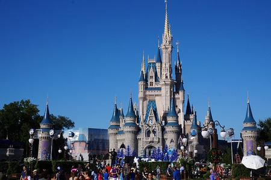
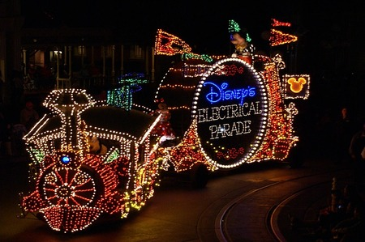
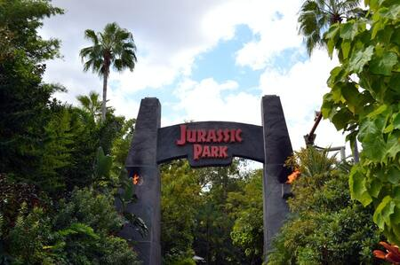
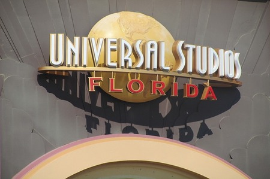
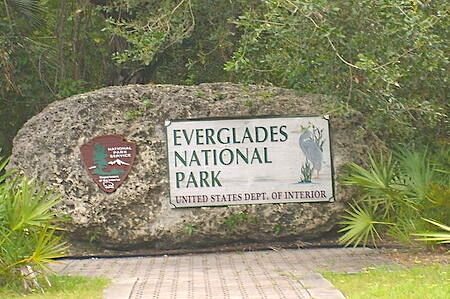
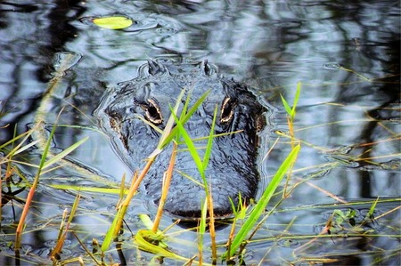

Walt Disney World Resort en Floride est le plus grand complexe de loisirs de Walt Disney Parks and Resorts filiale de la Walt Disney Company. Le complexe de Disney regroupe plusieurs parcs de loisirs, de nombreux hôtels et tous les services associés. C'est une vraie ville fondée sur le tourisme et façonnée par ce que Walt Disney puis l'entreprise Disney ont appelé la magie Disney. Le complexe comprend des attractions pour divertir les touristes : plusieurs parcs à thèmes et divers lieux de loisirs.
 Disney World Resort
Walt Disney Wordl Resort est composé de 4 parcs à thème et de 2 aquatiques. Il y a le Magic Kingdom, l’Epcot, le Disney's Hollywood Studios, le Disney's Animal Kingdom, le Typhoon Lagoon et le Blizzard Beach. Le parc se concentre sur tout les Disney depuis sa création ce qui ravira les petits comme les grands.
Universal Orlando Resort
Universal Orlando Resort est un complexe de loisirs du groupe Universal situé à Orlando en Floride près du Walt Disney World Resort. C'est un resort regroupant trois parcs à thèmes : Universal Studios Florida, Universal's Islands of Adventure, Universal's Epic Universe, Universal CityWalk et un parc aquatique Universal's Volcano Bay.
 Universal Studios Florida est un parc à thèmes et un studio de production de la société NBC Universal. Au fil des ans, Universal Studios Florida ne s'est pas limité à des attractions basées sur les franchises d'Universal. Des attractions basées sur des personnages des studios rivaux ont été ouvertes, dont beaucoup n'ont pas de parcs à thèmes à eux. Il y a par exemple SOS Fantômes et les Men in Black de Columbia Pictures,, Les Simpson de 20th Century Fox, et Shrek de DreamWorks.
Universal's Islands of Adventure est le second parc à thèmes . Tout comme dans le parc Universal Studios Florida, Islands of Adventure ne s'est pas limité à l'utilisation de ses licences propres. Le parc utilise ainsi des personnages issus de studios rivaux. On trouve par exemple Le Chat chapeauté (Dr Seuss Enterprises), Harry Potter (Warner Bros.) ou encore Spider-Man (Marvel Comics, maintenant propriété de la The Walt Disney Company) et bien d’autre.
Everglades
Le parc national des Everglades, s'étend sur les comtés de Miami-Dade, Monroe et de Collier. Il dispose de quatre centres ouverts aux visiteurs. La haute saison touristique se situe entre décembre et mars, lorsque les températures sont basses et les moustiques moins actifs. Ce parc national renferme le plus vaste milieu naturel subtropical du pays, et englobe 25 % de la région marécageuse originelle des Everglades. Visité par environ un million de personnes par an, le parc a été déclaré réserve de biosphère en 1976 (avec le parc national de Dry Tortugas), inscrit au patrimoine mondial de l'UNESCO en 1979 et classé zone humide d'importance internationale en 1987.
 Contrairement à la plupart des autres parcs nationaux des États-Unis, le parc national des Everglades a plus été créé pour protéger un écosystème fragile que pour des raisons géographiques. 36 espèces considérées comme menacées vivent dans le parc, dont la panthère de Floride, le crocodile américain et le lamantin des Caraïbes. Le parc est également la principale zone de reproduction des limicoles tropicaux d'Amérique du Nord, et contient le plus grand écosystème de mangrove du continent américain. Plus de 350 espèces d'oiseaux, environ 300 espèces de poissons d'eau douce ou salée, 40 espèces de mammifères et 50 espèces de reptiles vivent dans le parc. Toute l'eau douce de Floride est « recyclée » dans le parc, dont celle de l'aquifère Biscayne.